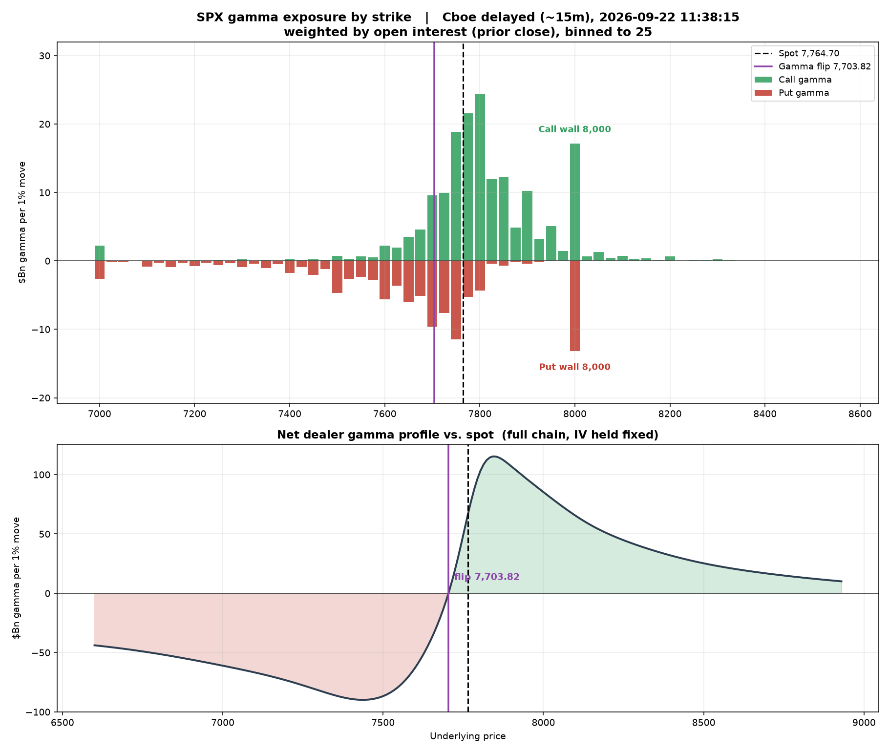
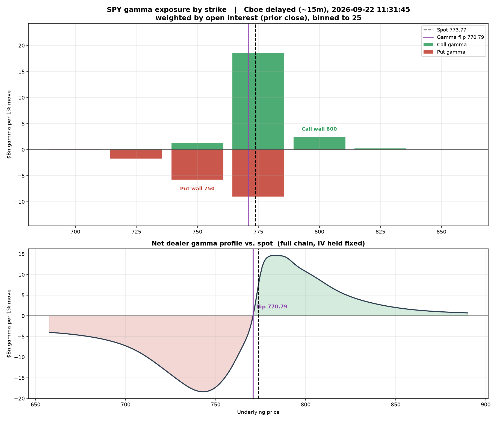
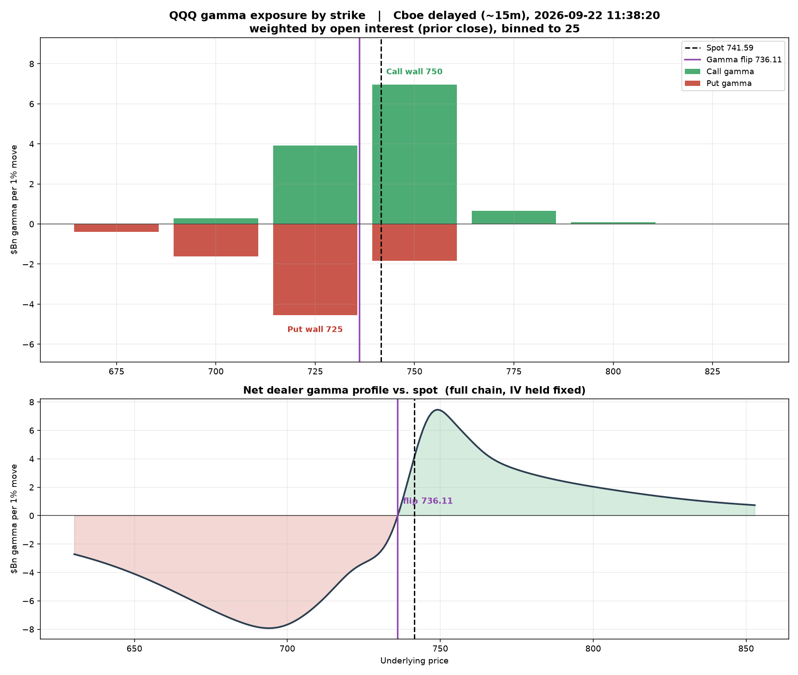
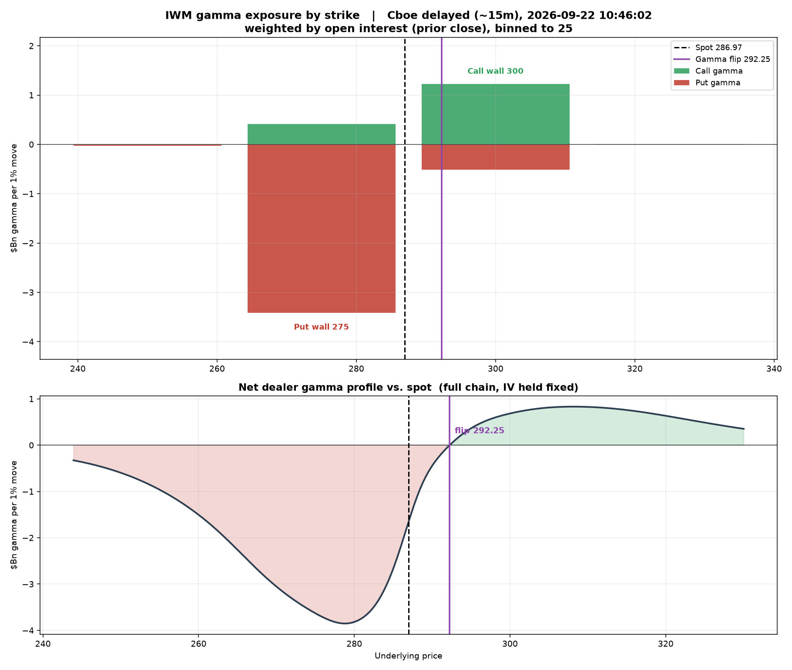

Cboe feed 2026-09-22 11:38:20 · built 2026-09-22 11:38 UTC
| Feed date | Spot | Flip | Net GEX $Bn | Regime |
|---|---|---|---|---|
| 2026-09-22 | 7,764.70 | 7,703.82 | 71.58 | positive |
| 2026-09-21 | 7,650.50 | 7,660.67 | 41.69 | positive |
| 2026-09-20 | 7,650.50 | 7,666.91 | -4.44 | negative |
| 2026-09-19 | 7,650.50 | 7,667.25 | -4.47 | negative |
| 2026-09-18 | 7,637.76 | 7,652.64 | -4.18 | negative |
| 2026-09-17 | 7,551.81 | 7,637.65 | -21.33 | negative |
| 2026-09-16 | 7,585.73 | 7,648.63 | -33.79 | negative |

| Feed date | Spot | Flip | Net GEX $Bn | Regime |
|---|---|---|---|---|
| 2026-09-22 | 773.77 | 770.79 | 5.63 | positive |
| 2026-09-21 | 766.78 | 764.14 | -4.28 | negative |
| 2026-09-20 | 761.69 | 765.46 | -3.66 | negative |
| 2026-09-19 | 761.69 | 765.51 | -3.67 | negative |
| 2026-09-18 | 761.60 | 764.85 | -8.87 | negative |
| 2026-09-17 | 760.60 | 764.38 | -15.87 | negative |
| 2026-09-16 | 759.28 | 766.10 | -11.92 | negative |

| Feed date | Spot | Flip | Net GEX $Bn | Regime |
|---|---|---|---|---|
| 2026-09-22 | 741.59 | 736.11 | 3.30 | positive |
| 2026-09-21 | 728.16 | 719.14 | 2.33 | positive |
| 2026-09-20 | 722.05 | 718.91 | 1.00 | positive |
| 2026-09-19 | 722.05 | 719.23 | 1.00 | positive |
| 2026-09-18 | 719.70 | 717.29 | -1.20 | negative |
| 2026-09-17 | 712.40 | 712.38 | -5.72 | negative |
| 2026-09-16 | 707.74 | 712.94 | -4.43 | negative |

| Feed date | Spot | Flip | Net GEX $Bn | Regime |
|---|---|---|---|---|
| 2026-09-22 | 286.97 | 292.25 | -2.31 | negative |
| 2026-09-21 | 286.14 | 293.66 | -2.93 | negative |
| 2026-09-19 | 284.10 | 295.94 | -2.95 | negative |
| 2026-09-19 | 284.10 | 296.26 | -2.95 | negative |
| 2026-09-18 | 285.42 | 291.41 | -6.62 | negative |
| 2026-09-17 | 286.45 | 294.46 | -5.77 | negative |
| 2026-09-16 | 285.71 | 296.54 | -4.11 | negative |
